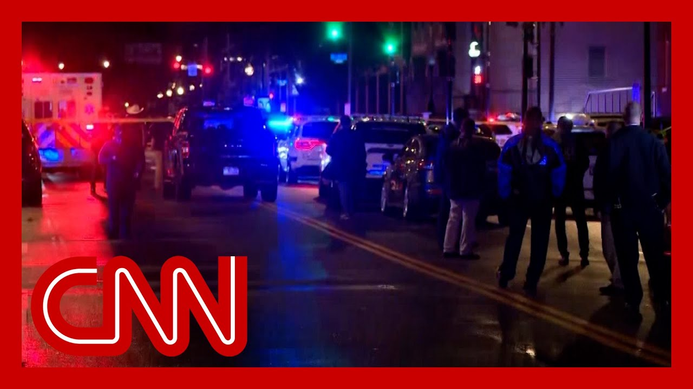

【华盛顿枪击案嫌疑人面临多项指控 包括谋杀外国官员】
Summary: Federal charges against Elias Rodriguez include murder of foreign officials, firearm-related offenses, and potential hate crimes, with more charges possible as the investigation continues.
摘要： 针对埃利亚斯·罗德里格斯的联邦指控包括谋杀外国官员、涉枪犯罪及潜在仇恨犯罪，随着调查深入可能追加更多指控。

⏱️ Estimated Reading Time: 12 min
These charges have just been unsealed in federal court here in Washington, DC.
这些指控刚刚在华盛顿特区的联邦法院公开。
Pamela, and I'll read you just, what what the, the documents say here at the to murder of these are charges that he's, tha he is facing, murder, of foreign officials causing the death of a person through the use of a firearm, discharge of a firearm during a crime of violence, and two counts of first degree m these are the first federal char that have been filed, against, Elias Rodriguez, who is set to appear before a federal judge in the next few minutes.
帕梅拉，我将向你宣读文件内容：他面临的指控包括谋杀外国官员、使用枪支致人死亡、暴力犯罪期间开枪以及两项一级谋杀罪名，这是针对埃利亚斯·罗德里格斯首次提出的联邦指控，他即将在几分钟内出庭。
Now. this is his first appearance.
这是他首次出庭。
We don't expect that he is going to enter a plea at this mo and, of course, this is an investigation, Pamela, as you know, this is a this is still very early in the investigation.
我们不预期他此时会进行抗辩，当然，帕梅拉，如你所知，调查仍处于早期阶段。
That is still ongoing.
调查仍在进行中。
there's still a lot more that, investigators want to know about the suspect, about who he was in touch with over the la weeks and months, and whether there's anybody else who possibly could have been inv in this crime.
调查人员仍需了解嫌疑人的更多信息，包括他过去数周数月内的联系人，以及是否有其他共犯。
And so those are still ongoing a at this point.
目前这些仍在调查中。
but clearly over the last, over the last few hours, since last night and since the shooting death of these two people, outside this, event at the, couple of Jewish museum, FBI and, the Metropolitan Police here in Washington, as well as their counterparts in Chicago, have been digging into the background of Rodriguez trying to make sure they know everything about him.
但显然过去几小时，自昨晚两人在犹太博物馆外遇害后，华盛顿FBI、大都会警察局及芝加哥警方一直在深挖罗德里格斯的背景。
And so these are the initial cha that we anticipate.
这些是我们预期的初步指控。
there might still be more.
可能还会有更多指控。
One of the things that, of cours you heard from the attorney gene you heard from, FBI officials.
正如你从司法部长和FBI官员处听到的。
One of the things they're focuse particular is the hate crime asp that anti-Semitism.
他们特别关注的是反犹主义仇恨犯罪方面。
clearly, because he targeted thi that was being held by a Jewish Jewish organization So you can expect that they're going to keep, pursuing that that angle of this of this incident.
显然，因他针对犹太组织活动实施袭击，调查将持续追踪这一方向。
And, so it's quite possible that these charges may not be the final word on, these charges that that the, the suspect faces.
因此当前指控可能并非最终定论。
Come on.
继续跟进。
All right, Evan, stand by for someone to bring back in Kathryn, you just heard Evan Lee The DOJ charged Elias Rodriguez with federal murder charges in connection with the death of those two Isra ambassador and embassy staffers.
好的埃文，稍后请凯瑟琳补充——司法部已就两名以色列大使馆人员遇害事件对埃利亚斯·罗德里格斯提起联邦谋杀指控。
and Lee Evan noted that these are just initial charges and that there could be more.
埃文强调这些仅是初步指控，后续可能追加。
Tell us a little bit more about What your reaction is to these c and why it takes time, usually before a hate crime charge could be brought.
请谈谈你的看法，以及为何仇恨犯罪指控通常需要更长时间。
Yeah. So this all makes perfect You start with the murder charge You start with the firearms char that we talked about because they're the most straigh Because you don't necessarily, at this point, just a few hours after the murde have to prove the motive in order to bring those straightforward murder and firearms charges.
是的，这完全合理——先以最直接的谋杀和涉枪罪名起诉，因案发数小时内无需证明动机即可提出这些指控。
This is just step one.
这只是第一步。
These charges will, in all likelihood, be be contained in what we called a criminal complaint.
这些指控很可能包含在刑事起诉书中。
Now, that'll be followed at some point in the coming week by an indictment.
接下来一周内将提交正式起诉书。
And at that point, that will have given DOJ and FBI more time to investigate to look into the motives and the planning.
届时司法部和FBI将有更多时间调查动机和预谋。
And I fully expect by that point as Evan just said, they're looking at hate crimes.
正如埃文所言，我预计届时会追加仇恨犯罪指控。
It certainly seems that hate cri charges will be justified here.
当前证据显然支持仇恨犯罪指控。
And we've seen FBI officials ref the possibility of terrorism cha But I think it's it's a comment and smart approach.
虽然FBI提及恐怖主义指控可能性，但当前策略明智且稳妥。
You get the murder charges on th You get the firearms charges on the books.
先落实谋杀和涉枪指控。
That's enough to arrest this ind That will certainly be enough to keep him locked up with no ba
这已足够逮捕并无限期羁押嫌疑人。
And then you work on the more co motive based charges over the coming days and weeks.
随后数日再完善基于动机的更复杂指控。
What stands out to you, Kathryn, also help us understand the diff of a murder of foreign officials That's one of the charges here.
凯瑟琳，谋杀外国官员这一指控有何特殊意义？
what that actually means, what the significance of that ca
其实际含义和重要性是什么？
Yeah, I think it's obviously there's the political implications of it
这显然具有政治意义——
We have to be very careful to make sure that foreigners who are coming to our country ar
我们必须确保赴美外国人的安全，
Our responsibility, you know, at the federal level, state and local level is is not just to our citizens, to anybody who's on our soil.
联邦、州和地方各级不仅对公民，也对境内所有人负有责任。
And when we create a situation h where people don't feel safe to come, it has its own ramifications, whether they're political or com
若造成人们不敢来访的局面，将引发政治和经济连锁反应。
but more importantly, I think it it creates a fear amongst the co a fear amongst people living in our own country that we can't keep people safe, and we need to be able to do tha
更重要的是，这会加剧国内民众对治安的恐慌。
We need to be able to assure peo that we can keep them safe.
我们必须确保能保障民众安全。
Evan Perez to bring you back.
请埃文·佩雷斯继续报道。
And you have more information ri
你有新进展？
That's right. Pamela, now going through the, the complaint here that that's been filed in federa one of the things that stands ou you know, we heard last night fr the DC police that the suspect, after allegedly carrying out the shooting, stayed on the scene, went into the Jewish Museum.
是的帕梅拉，根据联邦起诉书内容——昨晚DC警方称嫌疑人作案后留在现场并进入犹太博物馆。
And so, according to police, once they arrived at the scene, they actually went inside and started looking for for witn to try to talk to a Rodriguez, a according to this complaint.
警方抵达后进入馆内寻找目击者，而起诉书显示罗德里格斯主动向警方供认。
actually approached the officers and spoke to them and said, I di And I said, I did it, for free P
他走向警员表示："是我干的，为了巴勒斯坦。"
And, one of the things that you in this, according to, to prosecutors, is that, the suspect, you know, was outsi was noticed by some witnesses who believed that he was acting suspiciously.
起诉书称有目击者注意到他在馆外行为可疑。
But the idea that, after carrying out the shooting, he stayed on the scene didn't go anywhere.
但关键在于他作案后未逃离现场。
Went inside the museum and waited for police to come in and try to, to talk to witnesses.
反而进入博物馆等待警方到来。
again, it really gives you a sense of t that, you know, he was obviously wanted to to to be caught and wanted to to make his statement, as he did to the officers who ended up arresting him at th
这强烈表明他蓄意被捕并发表声明。
Pamela. All right. Ellie.
帕梅拉：好的。埃莉——
So what do you make of what Evan just laid and how that factors into the overall investigation?
你如何看待埃文所述内容及其对整体调查的影响？
Well, I think that's really important that prosecutors are going to us Pam, first of all, to show that there was an agenda here.
帕姆，检方将利用这点证明其存在预谋——
There was a specific political a He wanted to get caught.
他有特定政治目的，且蓄意被捕。
He wanted to have a chance to make the statements that we saw him make.
意图借机发表声明。
And that will be relevant both to hate crimes and to potential terrorism charg
这对仇恨犯罪和潜在恐怖主义指控都至关重要。
So I think that's a really impor development.
因此这是重大进展。
Also, if this individual is going to m some sort of mental incapacity defense down the line, I think that conduct, the sort of pre-planning and the calm, intentional surrender will badly undermine any such de
若其后续提出精神障碍辩护，这种有预谋的冷静自首行为将极大削弱辩护效力。
Steve Jensen on the assistant di in charge of the Washington Field Office for the FBI.
FBI华盛顿外勤办公室助理主任史蒂夫·詹森表示：
And I'd like to start by reiterating what Director Patel pushed out publicly that the tragic murder of these two Israeli embassy employees outside of the Capitol Jewish Mu last night was both an act of te and directed violence against the Jewish community.
首先重申帕特尔局长公开声明——昨晚国会山犹太博物馆外两名以色列使馆雇员遇害，是针对犹太社区的恐怖主义和定向暴力行为。
And it has the full and unwavering attention of the the FBI, Washington Field Office JTF has been in lockstep with MP and with the assistance of FBI o across the country.
FBI华盛顿办公室联合特遣队与MPD全国协同调查。
We're continuing to investigate and contact the subject's associ his family members and coworkers
正持续调查并联系嫌疑人亲属及同事。
We are also executing search war for his electronic devices, reviewing his social media accou and all of his internet postings regarding some internet postings
同时搜查其电子设备，审查社交媒体及网络发帖记录。
We are aware of some writings that are purported to have been authored by this subject.
我们注意到据称由其撰写的文字材料。
We're actively investigating to both the authorship and the attribution of these wri
正积极核实其真实性和作者身份。
If they belong to this subject o
若确系其所为——
I'd like to thank our partners in the U.S. Attorney's Office for bringing these significant federal charges in, in quick order, within 24 ho or less than of the time of this incident.
感谢联邦检察官办公室在案发24小时内迅速提出重大联邦指控。
Make no mistake, this attack was anti-Semitic violence, and it won't be tolerated.
必须明确：这是反犹暴力，绝不容忍。
These significant charges are a towards restoring justice for the victims and their famili
这些指控是还受害者及家属正义的第一步。
But our work is not done.
但调查尚未结束。
The FBI will continue to pursue and use all available resources to investigate this attack.
FBI将动用一切资源彻查此案。
We join MPD in affirming that there is no ongoing threat to this community, and we're also seeking assistanc the public.
与MPD共同确认社区暂无持续威胁，并呼吁公众协助。
We do have gaps in this investig
调查仍存在空白。
Currently, we know the subject landed in the DC area on May 20th, and that he was taken into custo on May 21st.
目前掌握其5月20日抵达DC，21日被拘。
We're asking the public, anybody who had contact with the anybody who knew his whereabouts or where he was located during that gap of time to contact the FBI at one 800, c or to submit an online tip@tips.
呼吁知情者拨打FBI热线或在线提交线索。